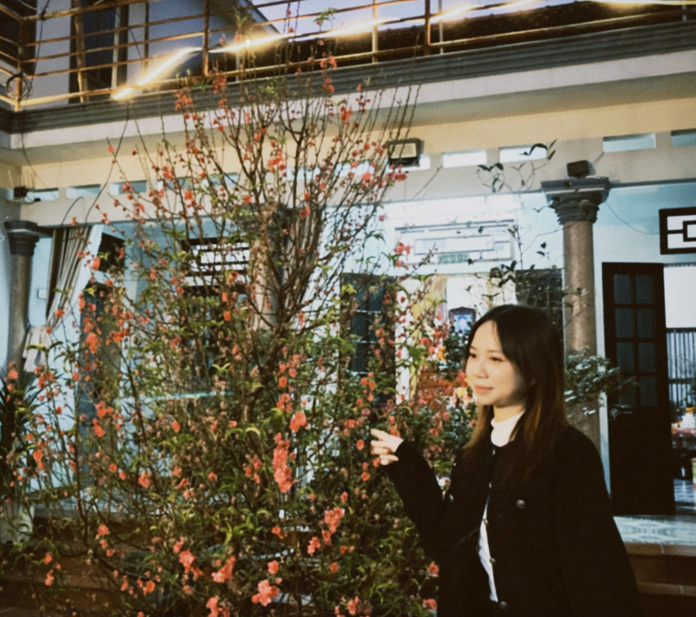
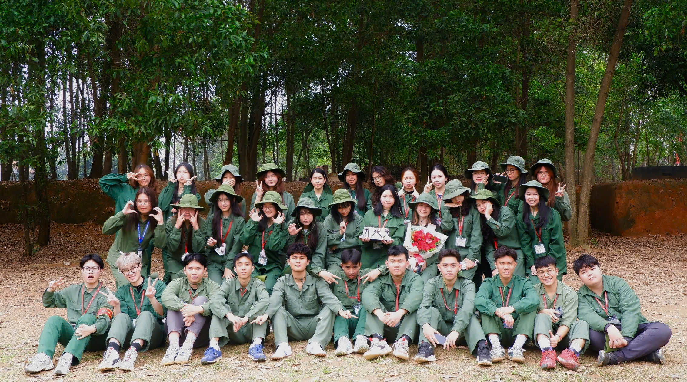
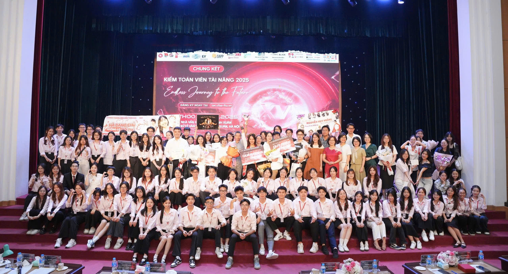
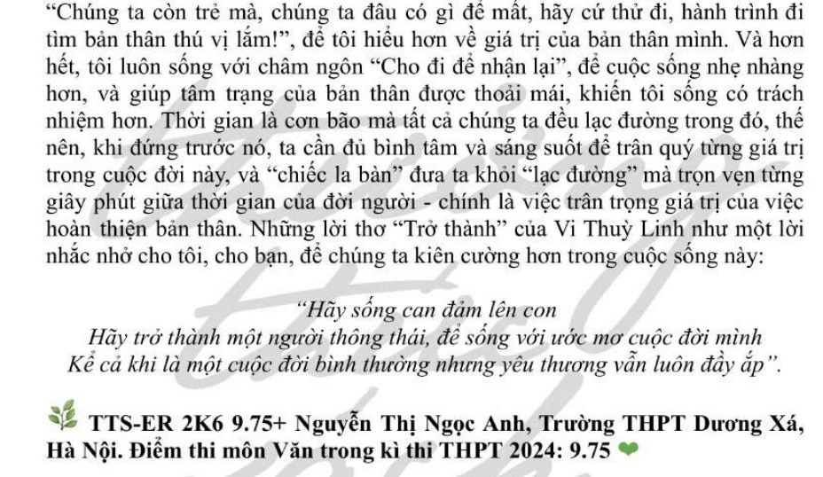

Nguyễn Thị Ngọc Anh
"Tôi ở cùng những chữ hôm nay
Điều còn lại sau đường dài tôi vượt..."
Hello! My name is Ngoc Anh, and I’m delighted to welcome you to my personal portfolio. More than just a place to present my experiences, this space reflects my journey — the lessons I have learned, the challenges I have faced, and the passions that continue to shape who I am today.
To me, a portfolio is not simply a record of projects or achievements, but a story that grows over time. Each page represents a step in my journey of learning and self-development. I also hope this portfolio can become a small "stopping point" for like-minded souls — a place where ideas resonate, inspiration is shared, and meaningful connections quietly begin.

Personal Information
- Date of birth: 27/06/2006
- Student of Foreign Trade University
- Second - year student - Accounting & Auditing major with ACCA international career orientation
- Address: Ha Noi
Extracurricular Activities
- Member of Communication Department at CFAA Club
- Member of Events Department at "Sưởi ấm vùng cao 2024"
- Member of Human Resources Department at "Cozy Village 2024"
Achievements
- I have a passion for literature, and here are some of my achievements:
- + Numerous awards for outstanding students in Literature at various levels
- + 9.75 points in Literature in the 2024 National High School Graduation Examination
Photos





